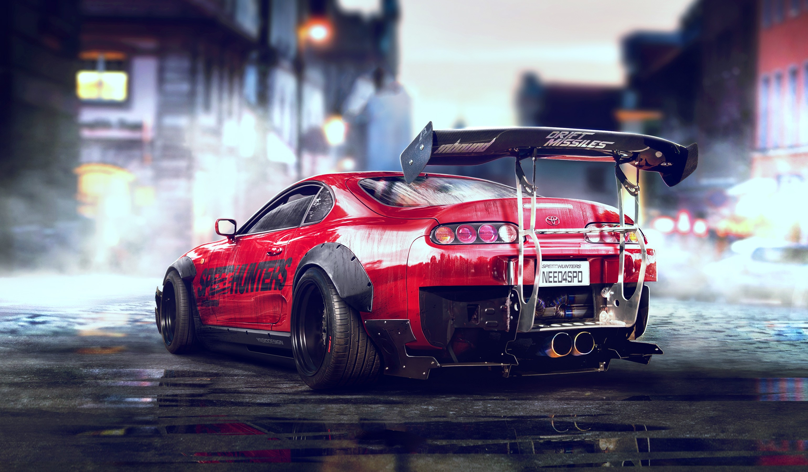

Supra mk4
Bienvenue sur Supra mk4. Un site qui vous permet d’en savoir plus sur l’une des voitures les plus connus grâce au film Fast and Furious 2 sortie en 2003.
Elle est actuellement une des meilleures voitures japonaises pour les fans de jdm (Japanese Domestic Market) c’est à dire les fans de voiture ancienne ou non comme la Nissan Skyline aussi appelé Nissan gtr R34 ou BMW M4 qui est sortie en 2020 pour faire simple ce sont des fans de voiture de rue comme dans fast and furious.